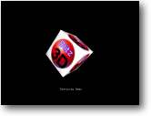

5. Texturas Objetivo: Como texturizar um
objeto |
 |
Para nossos objetos parecerem mais realísticos nós
realmente precisamos dar textura a eles, mas o que é texturizar? Pense
nisto como um modo de acrescentar detalhes extras a um objeto. Por exemplo:
Você projeta um cubo branco comum. Não parece muito interessante,
não é?
Mas acrescente uma textura a ele, e de repente você tem um belo cubo!
Texturas são imagens que foram projetados com um programa de desenho
(que possa salvar nos formatos aceitos pelo Blitz, como BMP, JPG, PNG, TGA,
PCX, etc.)
Outro exemplo: Se você projetasse um modelo básico de uma criatura,
usando uma textura você poderia acrescentar todas as características
externas - como roupas e expressões faciais.
Embora o B3D tenha vários comandos para administrar texturas múltiplas
e efeitos especiais, por enquanto nós estaremos usando apenas o comando
básico EntityTexture.
Claro que nós poderíamos economizar tempo projetando nossos objetos
e aplicando as texturas diretamente em um programa de modelagem, mas isso faria
deste tutorial um desperdício de tempo!
Então por que iríamos querer aplicar uma textura em tempo real?
Bem, uma textura nova pode ser posta a qualquer hora sobre o objeto. Pegue uma
parede, atire nela! Para coisas parecerem realísticas em nosso mundo
3D, nós gostaríamos de ter alguma indicação de que
a parede foi atingida. Nós poderíamos fazer isto carregando uma
textura de um buraco de bala diretamente sobre a parede. Todo jogo 3D atualmente
no mercado usa artifícios de textura de uma forma ou outra. Assim como
aumenta sua experiência, aumenta sua imaginação! Por que
ter um rio liso, quando você pode usar texturas para dar a impressão
de ondulações?
O B3D tem muitos recursos interessantes para nós usarmos, inclusive as
texturas ANIMADAS. Nós estaremos usando isto mais tarde! (Quake I/II/III
usa este truque para nos dar a impressão de água movimentando)
Vamos ver isso na prática:
| Graphics3D 800,600 SetBuffer BackBuffer() camera=CreateCamera() CameraViewport camera,0,0,800,600 light=CreateLight() cube=CreateCube() PositionEntity cube,0,0,5 texture=LoadTexture("blitztexture.bmp") EntityTexture cube,texture While Not KeyHit(1) TurnEntity cube,0.1,0.2,0.3 UpdateWorld RenderWorld Text 340,500,"Demonstração de Textura" Flip Wend End |
Como você pode ver, uma textura pode fazer toda a diferença
a um objeto muito básico.
As únicas 2 linhas de código que nós ainda não conhecemos
são:
|
texture=LoadTexture("blitztexture.bmp") EntityTexture cube,texture |
Dois comandos amigáveis. O primeiro carrega uma textura
- com a variável 'texture' apontando para ela.
Uma vez que nós carregamos a textura, nós a aplicamos ao objeto
com o comando EntityTexture. (Aqui nós estamos aplicando a textura 'texture'
ao objeto 'cube')
Você pode, se você quiser, abrir o arquivo BLITZTEXTURE.BMP no MS
Paint e fazer alterações!
É isso aí! Uma palavra rápida de conselho: Se seu objeto
não aparecer texturizado como deveria, sempre verifique se as texturas
estão no diretório certo. É muito fácil gastar meio
dia tentando resolver um problema de textura, e depois descobrir que você
moveu o programa a outro diretório sem arrastar os arquivos de textura
associados com ele.
{kind=link}